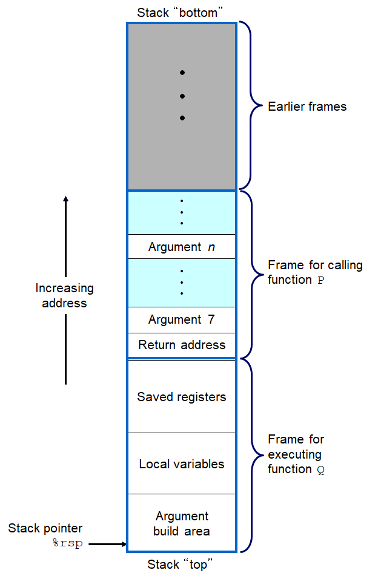

程序的机器级表示
计算机系统使用了多种不同的抽象，利用简单的抽象模型来隐藏实现的细节。对于机器级编程来说，其中两种抽象尤为重要。第一种由指令集体系结构或指令集架构来定义机器级程序的格式和行为，它定义的处理器的状态、指令的格式，以及每条指令对状态的影响。第二种抽象是，机器级程序使用的内存地址是虚拟地址，提供的内存模型看上去是一个非常大的字节数组。
书中所使用的机器代码是x86-64的，它和原始的C代码差别非常大。一些通常对C语言程序员隐藏的处理器的状态都是可见的。
- 程序计数器（通常称为“PC”，在x86-64中通%rip表示）给出将要执行的下一条指令在内存中的地址。
- 整数寄存器文件包含16个命名的位置，分别储存64位的值。这些寄存器可以存储地址或整数数据。有的寄存器被用来记录某些重要的程序状态（如pc，栈指针），而其他寄存器用来保存临时数据（如过程的参数和局部变量，以及函数的返回值）。
- 条件码寄存器保存着最近执行的算术或逻辑指令的状态信息。它们用来实现控制或数据流中的条件变化，比如说用来实现if和while语句。
- 一组向量寄存器可以存放一个或多个整数或浮点数值。
数据格式
在64位系统中，单次访问内存的最大数据量为8字节，所以整数寄存器是8字节的。但是，也有访问1字节，2字节，4字节的情况，所以，在寄存器中，同一个寄存器有不同的名字，区别在于它们访问的数据是不一样的。如%rax，%eax都是一个寄存器，但是%rax访问的8字节，而%eax访问的是4字节。除此之外，在汇编指令的后面还有可能有字符后缀，用于表示操作数的大小。例如，数据传送指令有四个变种：movb(传送字节)、movw（传送字）、movl（传送双字）、movq（传送四字）。
操作数指示符
大多数指令有一个或多个操作数，指示出执行一个操作中要使用的源数据值，以及放置结果的目的位置。数据源有三种不同的类型。第一种类型是立即数，用来表示常数值；第二种类型是寄存器，他表示某个寄存器的内容；第三种是内存引用，它会根据计算出来的地址方位某个内存位置。在汇编中的表示如下：
| 类型 | 格式 | 操作数值 | 例子 |
|---|---|---|---|
| 立即数 | $Imm | Imm | $0x104 |
| 寄存器 | $r_a$ | $R[r_a]$ | %rax |
| 存储器 | $Imm(r_b,r_i,s)$ | $M[Imm+R[r_b]+R[r_i]\cdot s]$ | 0xFC(%rax,%rdx,4) |
值得注意的是，在最后一个内存引用中的几个变量是可以省略的，但是s不能单独出现，其他的都是可以的。如0xFD表示内存0xFD的存储的值，(%rax,%rdx)表示内存为%rax+%rdx的值。
数据传送指令
传送指令的格式如下：
MOV S,D
这里，S代表源，D代表目的，如果指令是大写的，就代表是有变种的指令，这些指令的后面可以跟不同的后缀，代表操作数的大小。mov指令，就是数据从S复制到D。利用mov指令，就可以实现一个swap函数，swap函数的原型如下：
long swap(long *x,long *y){
long temp = *x;
*x = *y;
*y = temp;
}
使用命令：
gcc -S -Og test.c -o test.s
得到汇编代码如下：
movq (%rdi), %rax
movq (%rsi), %rdx
movq %rdx, (%rdi)
movq %rax, (%rsi)
ret
这里不同的编译器编译出来的效果有一点不一样。
压栈和弹栈的操作可以说是mov指令的变种，因为另一个操作数是栈。要注意的是，栈是向下生长的。压入和弹出栈数据的格式如下：
pushq S /* 栈指针向下移动（-8），然后再赋值 */
popq D /* 先对元素赋值，然后栈指针向上移动（+8） */
算术和逻辑操作
leaq S,D /* 加载有效地址D=&S */
INC D /* D++ */
DEC D /* D-- */
NEG D /* D = -D */
NOT D /* D = ~D */
ADD S,D /* D = D + S */
SUB S,D /* D = D - S */
IMUL S,D /* D = D * S */
XOR S,D /* D = D ^ S */
OR S,D /* D = D | S */
AND S,D /* D = D & S */
SAL k,D /* D = D << k */
AHL k,D /* D = D << k(等同于SAL) */
SAR k,D /* D = D >> k(算术右移) */
SHR k,D /* D = D >> k (逻辑右移)*/
值得注意的是leap指令的用法，它的指令形式是从内容读数据到寄存器，但实际上它根本就没有引用内存。有时候用于求值。如：
long scale(long x, long y, long z){
long t = x + 4 * y + 12 * z;
return t;
}
汇编代码如下：
/* x in %rdi, y in %rsi, z in %rdx */
leap (%rdi,%rsi,4), %rax /* x + 4 * y */
leap (%rdx,%rdx,2), %rdx /* z + 2*z = 3*z */
leap (%rax,%rdx,4), %rax /* (x+4*y) + 4*(3*z) = x + 4*y + 12 * z */
条件码
除了整数寄存器，CPU还维护着一组单个位的条件码寄存器，它们描述了最近算术或逻辑操作的属性。可以检测这些寄存器来执行条件分支指令。最常用的条件码有：
- CF：进位标志。
- ZF：零标志（结果为0）。
- SF：符号标志（结果为负数）。
- OF：溢出标志。
算术和逻辑操作会改变条件码，还有两类指令，它们只设置条件码而不改变其他任何寄存器。
CMP S1, S2 /* 比较，基于S2 - S1 */
TEST S1, S2 /* 测试，基于S1 & S2 */
jump指令
jump指令是无条件跳转。它可以是直接跳转，即跳转目标是作为指令的一部分编码的；也可以是间接跳转，即跳转目标是从寄存器或内存位置中读出的。jump指令有如下的一些分支：
jmp Label /* 无条件直接跳转 */
jmp *Operand /* 无条件间接跳转 */
je Label /* 相等 */
jne Label /* 不相等 */
js Label /* 负数 */
jns Label /* 非负数 */
jg Label /* 大于,有符号 */
jge Label /* 大于等于，有符号 */
jl Label /* 小于,有符号 */
jle Label /* 小于等于，有符号 */
ja Label /* 大于，无符号 */
jae Label /* 大于等于，无符号 */
jb Label /* 小于，无符号 */
jbe Label /* 小于等于，无符号 */
jump语句有点类似于C语言中的goto语句，而条件语句和循环语句都可以转换为条件判定和goto语句，下面具体说明这种转换。
if-else语句
if(test-expr)
then-statement
else
else-statement
可以转化为下面的goto语句：
t = test-expr;
if(!t)
goto false;
then-statement
goto done;
false:
else-statement
done:
C语言提供了许多循环结构，即do-while、while和for。汇编中没有相应的指令存在，可以用条件测试和跳转组合起来实现循环的效果。
do-while语句的通用形式如下：
do
body-statement
while(test-expr)
可以转化为下面的语句：
loop:
body-statement
t = test-expr;
if(t)
goto loop;
while语句的通用形式如下：
while(test-expr)
body-statement
对于while语句的转换，有两种方式，第一种是jump to middle：
goto test;
loop:
body-statement
test:
t = test-expr;
if(t)
goto loop;
第二种是guarded-do:
t = test-expr;
if(!t)
goto done;
loop:
body-statement
t = test-expr;
if(t)
goto loop;
done:
for循环的通用形式如下：
for(init-expr;test-expr;update-expr)
body-statement
for循环可以改写为while循环：
init-expr;
while(test-expr){
body-statement
update-expr;
}
改为goto的形式就比较简单了，这里就不写了。
switch语句可以根据一个整数索引值进行多重分支。它通过使用跳转表这种数据结构来提高效率，跳转表是一个数组，表项$i$是一个代码段的地址，这个代码段实现当开关索引值等于$i$时程序应该采取的动作。程序代码用开关索引值来执行一个跳转表内的数组引用，确定跳转指令的目标。个人感觉这个对于数据是连续比较好处理，但如果数据分得很开，比如1和1000，好像处理起来就不好处理了，因为对于连续的处理方式是这样的：
jmp *.L4(,%rsi,8)
显然，L4这个数组可以保存0-n的情况的地址，这样跳转时没有问题。个人认为这个不太重要，大概知道思想就可以了。
过程
过程是软件中一种很重要的抽象。它提供了一种封装代码的方式，用一组指定的参数和一个可选的返回值实现了某种功能。然后，可以在程序中不同的地方调用这个函数。 要提供对过程的机器级支持，必须要处理许多不同的属性。假设过程P调用了过程Q，Q执行后返回到P。这些动作包括下面一个或多个机制：
- 传递控制。在进入过程Q的时候，程序计数器必须被设置为Q的代码的起始地址，然后在返回时，要把程序计数器设置为P中调用Q后面那条指令的地址。
- 传递数据。P必须能够向Q提供一个或多个参数，Q必须能够向P返回一个值。
- 分配和释放内存。在开始时，Q可能需要为局部变量分配空间，而在返回前，又必须释放这些存储空间。
传递控制是通过两条汇编指令call和ret实现的。
/* 假设P调用Q */
call Label /* 把P中call指令后面那条指令的地址压栈，然后将PC的值置为Q的起始地址 */
call *Operand /* 间接跳转，和上面的一样 */
ret /* 从栈中弹出地址，然后把PC设置为这个地址 */
传递数据是通过寄存器和栈来传递的。当函数的参数小于等于6时，这些参数是通过寄存器传递的，从前往后依次是：
%rdi(%edi,%di,%dil), %rsi(%esi,%si,%sil), %rdx(%edx,%dx,%dl), %rcx(%ecx,%cx,%cl), %r8(%r8d,%r8w,%r8b), %r9(%r9d,%r9w,%r9b)
前面是访问64位的寄存器名，后面是32,16和8位的寄存器名。如果超过了6个，需要使用栈来传递参数，栈的结构如下图。

可以看出，如果超过了6个参数，这些参数保存在栈上，并且是在返回值地址的上面。
分配和释放内存是通过栈来完成的，这里指的是是为局部变量分配内存。从上面的图中可以看出是怎么分配局部变量的，就是让栈向下生长。值得注意的是，寄存器%rbx，%rbp和%r12~%r15被划分为被调用者保存寄存器。当过程P调用过程Q时，Q必须保存这些寄存器的值，保证它们的值在Q返回到P时与Q被调用时是一样的，也就是说，先把这些寄存器的值保存在栈上，返回的时候，又将这些值赋给寄存器。所以，一个函数中通常可以看到以下的代码：
pushq %rbp
pushq %rbx /* 保存寄存器 */
subq $8, %rsp /* 为局部变量分配内存 */
... /* 函数的逻辑 */
addq $8, %rsp
popq %rbx
popq %rbp
可以看出，这种实现函数调用和返回的方法可以适应普通的函数调用，也可以适用于递归调用，因为每次函数调用都有它自己的私有状态信息存储空间，一个函数调用其他函数和调用自己本身，在汇编代码层面是没有区别的。
数组和结构的访问
一维数组，在内存中是一块连续的区域，对于一维数组的访问，是数组开头的指针和偏移来实现的，如下面的例子：
int arr[3] = {1,2,3};
int *p = arr;
printf("arr[1] = %d\n",*(p+1));
对于二维数组来说，虽然是二维的，但是存储的结构仍然是一维的，二维数组的访问也是通过记录数组头和偏移来实现的，只不过这里的偏移有两个，行和列，并且数组元素的内部是按照行优先的顺序排列的。如下面的代码：
int arr[3][4] = {
{1,2,3,4},
{5,6,7,8},
{9,10,11,12},
}; /* 相当于int arr[12] = {1,2,...,12} */
int *p = arr;
printf("arr[2][3] = %d\n",*(p+ 4 * 2 + 3));
对于结构的存储，和数组的存储也是一样的，只不过结构中间可能存在对齐的现象，因为结构里面的数据类型一般是不一样的。对于结构中成员的访问，也是通过结构头和偏移实现，偏移的信息是由编译器维护的，编译器可以通过对象的成员名，知道它在结构中偏移。如下面的代码：
struct{
char c; /* 偏移0 */
int i; /* 偏移4 */
long l; /* 偏移8 */
}s;
s.c = 'A';
s.i = 23;
s.l = 12345678;
char *p = &s;
printf("s.c = %c,s.i = %d,s.l = %ld\n",*p,*((int *)(p + 4)),*( (long *)(p + 8) ));
可以看出，对于结构体成员的访问，是通过偏移，然后按照类型取出数据就可以。这两个我都没有看汇编代码，个人感觉这些东西了解原理是最重要的。
缓冲区溢出
C对于数组引用不进行任何边界检查，而且局部变量和状态信息都存放在栈中。这两种情况结合到一起能导致严重的程序错误，对越界的数组元素的写操作会破坏存储在栈中的状态信息。这有可能导致缓冲区溢出攻击。比如，修改函数的返回地址，导致执行一个特定的攻击程序。对缓冲区溢出攻击的防御手段有以下几种：
- 栈随机化。
- 栈破坏检测。
- 限制可执行代码区域。
这里写得比较简单，因为有一个实验和这个密切相关，实验部分再说详细一点。